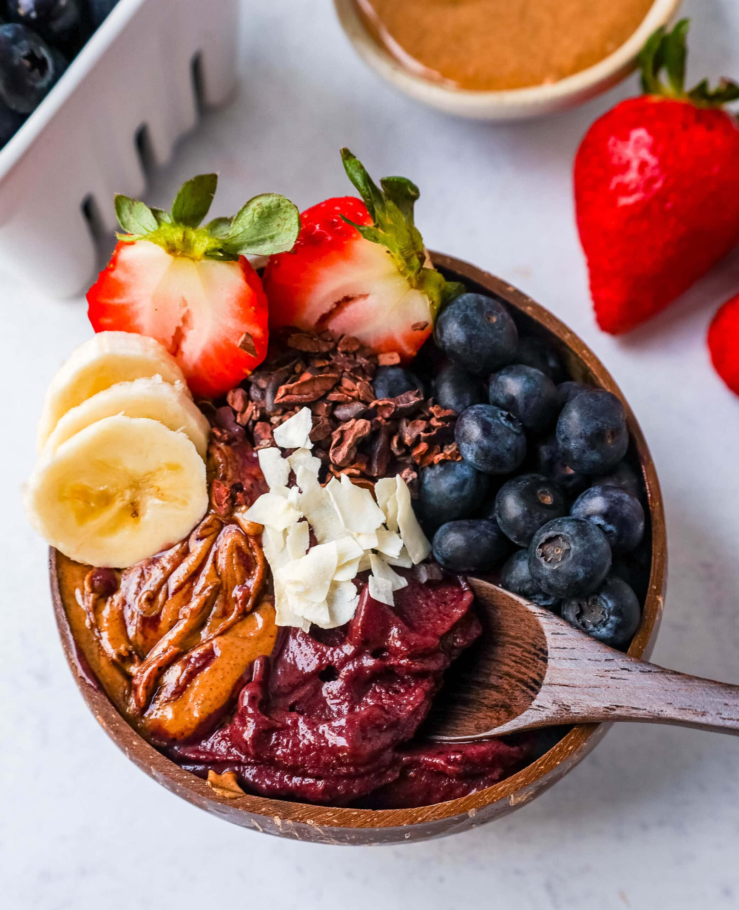

Acai Bowl Recipe

Description:
Where superfood meets super-delicious. This tropical bowl of blended Acai
berries can be topped with anythiing the heart desires. For a tasty and
nutritious bowl, top with granola, coconut flakes, nut butter and a symphony of fresh
fruits. Not only healthy and filling, it is a work of art.
Ingredients:
- Acai berries, or Acai bowl base
- Any fruit of your choice
- Nut butter (I like to use peanut butter for extra protien)
- Granola
- Coconut shreds/flakes
- Honey
Directions:
- (If you are not using pre-made Acai base) Blend your Acai berries
with a little water or milk, until smooth. Fill the bottom of your
serving bowl with the Acai base.
- Top with peanut butter and granola first.
- Add your fruits to the top of the bowl
- Top with coconut shreds and a drizzle of honey.
- ENJOY!